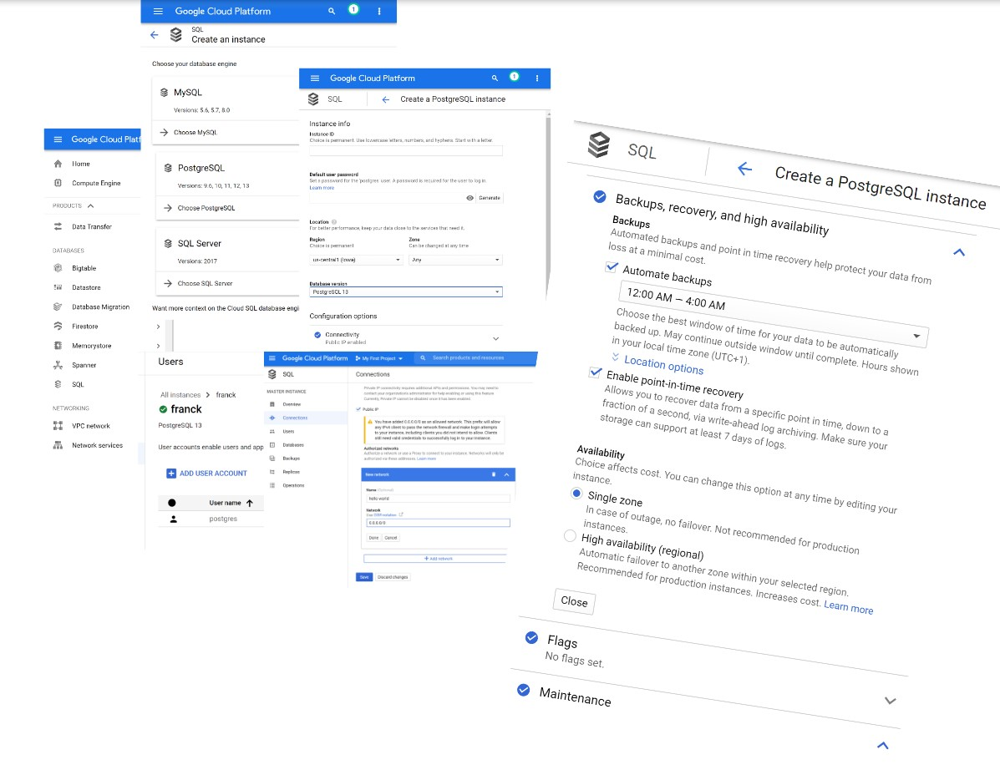
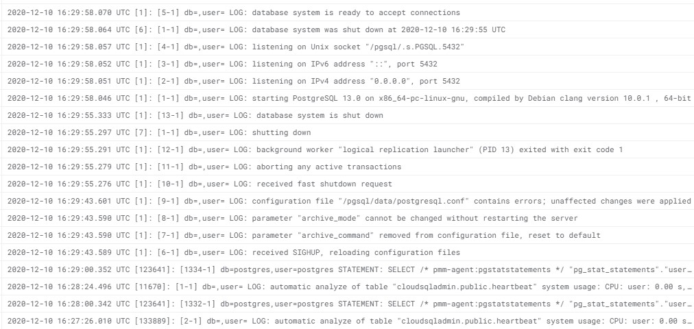
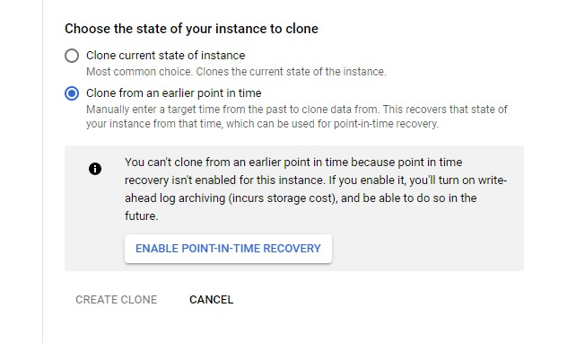
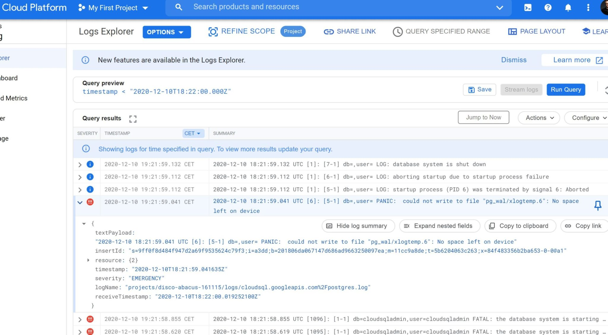
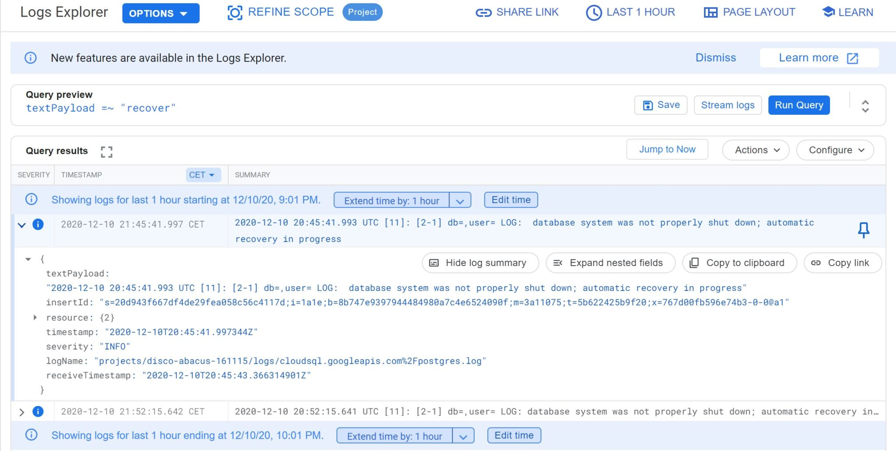
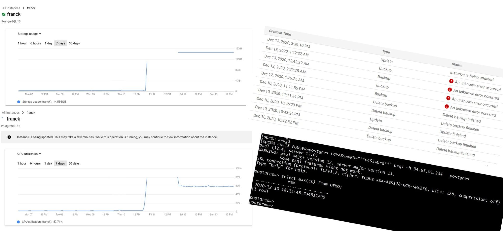

This was first published on https://www.dbi-services.com/blog/recovery-in-the-%e2%98%81-with-google-cloud-sql-postgresql/ (2020-12-11)
Republishing here for new followers. The content is related to the versions available at the publication date.
.
In a previous post I started this series of “Recovery in the ☁” with the Oracle Autonomous database. My goal is to explain the recovery procedures, especially the Point-In-Time recovery procedures because there is often confusion, which I tried to clarify in What is a database backup (back to the basics). And the terms used in managed cloud services or documentation is not very clear, not always the same, and sometimes misleading.
For example, Google Cloud SQL documentation says: “Backups are lightweight; they provide a way to restore the data on your instance to its state at the time you took the backup” and this is right (you can also restore to another instance). The same documentation mentions a bit later that “Point-in-time recovery helps you recover an instance to a specific point in time”. So all information is correct here. But misleading the way it is put: mentioning backups (i.e how the protection is implemented) for one and recovery (i.e how protection is used) for the other. In my opinion, the cloud practitioner should not be concerned by backups in a managed database. Of course, the cloud architect must know how it works. But only the recovery should be exposed to the user. Backups are what the cloud provider runs to ensure the recovery SLA. Here the term backup actually means “restore point”: the only point-in-time you can recover when point-in-time recovery is not enabled. But backups are actually used for both. The point-in-time recovery option just enables additional backup (the WAL/redo).
I have created a PostgreSQL instance on the Google Cloud (the service “Google Cloud SQL” offers MySQL, PostgreSQL and SQLServer): 
You can see that I enabled “Automate backups” with a time window where they can occur (daily backups) by keeping the default. And “Enable point-in-time recovery”, which is not enabled by default.
I can understand the reason why it is not enabled by default: enabling it requires more storage for the backups and it is fair not to activate by default a more expensive option. However, I think that when you choose a SQL database, you opt for persistence and durability and expect your database to be protected. I’m not talking only about daily snapshots of the database. All transactions must be protected. Any component can fail and without it, a failure compromises durability.
From my consulting experience and contribution in database forums, I know how people read this. They see “backup” enabled and then think they are protected. It is a managed service, they may not know that their transactions are not protected if they don’t enable WAL archiving. And when they will discover it, it will be too late. I have seen too many databases where recovery settings do not fit what users expect. If I were to design this GUI, with my DBA wisdom, either I would put point-in-time recover as a default, or show a red warning saying: with this default you save storage but will lose transactions if you need to recover.
Here, I have enabled the option “Enable point-in-time recovery” which is clearly described: Allows you to recover data from a specific point in time, down to a fraction of a second, via write-ahead log archiving. Make sure your storage can support at least 7 days of logs. We will see later what happens if storage cannot support 7 days.
I’ve created a simple table, similar to what I did on DigitalOcean to understand their recovery possibilities in this post.
postgres=> create table DEMO as select current_timestamp ts;
SELECT 1
postgres=> select * from DEMO;
ts
-------------------------------
2020-12-09 18:08:24.818999+00
(1 row)
I have created a simple table with a timestamp
while true ; do
PGUSER=postgres PGPASSWORD="**P455w0rd**" psql -h 34.65.91.234 postgres <<<'insert into DEMO select current_timestamp;'
sleep 15 ; done
This connects and inserts one row every 15 seconds.
[opc@a aws]$ PGUSER=postgres PGPASSWORD="**P455w0rd**" psql -h 34.65.91.234 postgres <<<'select max(ts) from DEMO;' | ts
Dec 09 21:53:25 max
Dec 09 21:53:25 -------------------------------
Dec 09 21:53:25 2020-12-09 20:53:16.008487+00
Dec 09 21:53:25 (1 row)
Dec 09 21:53:25
I’m interested to see the last value, especially with I’ll do point-in-time recovery.
[opc@a aws]$ PGUSER=postgres PGPASSWORD="**P455w0rd**" psql -h 34.65.91.234 postgres | ts
insert into DEMO select current_timestamp returning *;
Dec 09 21:55:58 ts
Dec 09 21:55:58 -------------------------------
Dec 09 21:55:58 2020-12-09 20:55:58.959696+00
Dec 09 21:55:58 (1 row)
Dec 09 21:55:58
Dec 09 21:55:58 INSERT 0 1
insert into DEMO select current_timestamp returning *;
Dec 09 21:55:59 ts
Dec 09 21:55:59 -------------------------------
Dec 09 21:55:59 2020-12-09 20:55:59.170259+00
Dec 09 21:55:59 (1 row)
Dec 09 21:55:59
Dec 09 21:55:59 INSERT 0 1
insert into DEMO select current_timestamp returning *;
Dec 09 21:55:59 ts
Dec 09 21:55:59 -------------------------------
Dec 09 21:55:59 2020-12-09 20:55:59.395784+00
Dec 09 21:55:59 (1 row)
Dec 09 21:55:59
Dec 09 21:55:59 INSERT 0 1
insert into DEMO select current_timestamp returning *;
Dec 09 21:55:59 ts
Dec 09 21:55:59 -------------------------------
Dec 09 21:55:59 2020-12-09 20:55:59.572712+00
Dec 09 21:55:59 (1 row)
Dec 09 21:55:59
Dec 09 21:55:59 INSERT 0 1
I have inserted more frequently a few more records and this is the point I want to recover to: 2020-12-09 20:55:59 where I expect to see the previous value comitted (20:55:58.959696).
You do a Point In Time recovery with a clone. This is where namings may be different between cloud providers and it is important to understand. You do a Point In Time recovery when you have an error that happened in the past: a table was dropped by mistake, the application updated the wrong data, because of a user error or application bug, maybe you need to check a past version of a stored procedure,… You want to recover the database to the state just before this error. But you also want to keep the modifications that happened later. And recovery is at database level (some databases offer tablespace subdivision) so it is all or none. Then, can’t overwrite the current database. You keep it running, at its current state, and do your point-in-time recovery into another one. Actually, even with databases with fast point-in-time recovery (PITR), like Oracle Flashback Database or Aurora Backtrack, I did in-place PITR only for special cases: CI test database, or prod during an offline application release. But usually production databases have transactions coming that you don’t want to lose.
Then, with out-of-place PITR, you have access to the current state and the previous state and merge what you have to merge in order to keep the current state but with errors corrected from the past state. This is a copy of the database from a previous state and this is called a clone, it will create a new database instance, that you will keep at least the time you need to compare, analyze, export, and correct the error. So… do not search for a “recover” button. This is in the CLONE action.
The “Create a clone has to options”: “Clone current state of instance” and “Clone from an earlier point in time”. The first one is not about recovery because there’s no error to recover, just the need to get a copy. The second is the Point In Time recovery.
So yes, this operation is possible because you enabled “Point in Time Recovery” and “Point in Time Recovery” (PITR) is what you want to do. But, in order to do that, you go to the “Clone” menu and you click on “Clone”. Again, it makes sense, it is a clone, but I think it can be misleading. Especially when the first time you go to this menu is when a mistake has been made and you are under stress to repair.
When you select “Clone from an earlier point in time” you choose the point in time with a precision of one second. This is where you select the latest point just before the failure. I’ll choose 2020-12-09 20:55:59 or – as this is American, 2020-12-09 8:55:59 PM.
While it runs, it can take time because the whole database is cloned even if you need only part of it, I’ll mention two things. The first one is that you have a granularity of 1 second in the GUI and can even go further with CLI. The second one is that you can restore to a point in time that is even a few minutes before the current one. This is obvious when you work on on-premises databases because you know the WAL is there, but not all managed databases allow that. For example, in the previous post on Oracle Autonomous Database I got a message telling me that “the timestamp specified is not at least 2 hours in the past”. Here at Dec 9, 2020, 10:12:43 PM I’m creating a clone of the 2020-12-09 8:55:59 PM state with no problem.
Yes, my first PITR attempt failed. But that’s actually not bad because I’m testing the service, and that’s the occasion to see what happens and how to troubleshoot.
One bad thing (which is unfortunately common to many managed clouds as they try to show a simple interface that hides the complexity of a database system): no clue about what happened:
The message says “Failed to create or a fatal error during maintenance” and the SEE DETAILS has the following details: “An unknown error occured”. Not very helpful.
But I have also 3 positive feedbacks. First, we have full access to the postgreSQL logs. There’s even a nice interface to browse them (see the screenshot) but I downloaded them as text to browse with vi 😉
From here I see no problem at all. Just a normal point-in-time recovery:
,INFO,"2020-12-09 21:59:18.236 UTC [1]: [10-1] db=,user= LOG: aborting any active transactions",2020-12-09T21:59:18.237683Z
,INFO,"2020-12-09 21:59:18.232 UTC [1]: [9-1] db=,user= LOG: received fast shutdown request",2020-12-09T21:59:18.235100Z
,INFO,"2020-12-09 21:59:17.457 UTC [1]: [8-1] db=,user= LOG: received SIGHUP, reloading configuration files",2020-12-09T21:59:17.457731Z
,INFO,"2020-12-09 21:59:12.562 UTC [1]: [7-1] db=,user= LOG: received SIGHUP, reloading configuration files",2020-12-09T21:59:12.567686Z
,INFO,"2020-12-09 21:59:11.436 UTC [1]: [6-1] db=,user= LOG: database system is ready to accept connections",2020-12-09T21:59:11.437753Z
,INFO,"2020-12-09 21:59:11.268 UTC [11]: [11-1] db=,user= LOG: archive recovery complete",2020-12-09T21:59:11.268715Z
,INFO,"2020-12-09 21:59:11.105 UTC [11]: [10-1] db=,user= LOG: selected new timeline ID: 2",2020-12-09T21:59:11.106147Z
,INFO,"2020-12-09 21:59:11.040 UTC [11]: [9-1] db=,user= LOG: last completed transaction was at log time 2020-12-09 19:55:58.056897+00",2020-12-09T21:59:11.041372Z
,INFO,"2020-12-09 21:59:11.040 UTC [11]: [8-1] db=,user= LOG: redo done at 0/123F71D0",2020-12-09T21:59:11.041240Z
,INFO,"2020-12-09 21:59:11.040 UTC [11]: [7-1] db=,user= LOG: recovery stopping before commit of transaction 122997, time 2020-12-09 19:56:03.057621+00",2020-12-09T21:59:11.040940Z
,INFO,"2020-12-09 21:59:10.994 UTC [11]: [6-1] db=,user= LOG: restored log file ""000000010000000000000012"" from archive",2020-12-09T21:59:10.996445Z
,INFO,"2020-12-09 21:59:10.900 UTC [1]: [5-1] db=,user= LOG: database system is ready to accept read only connections",2020-12-09T21:59:10.900859Z
,INFO,"2020-12-09 21:59:10.899 UTC [11]: [5-1] db=,user= LOG: consistent recovery state reached at 0/11000288",2020-12-09T21:59:10.899960Z
,ALERT,"2020-12-09 21:59:10.896 UTC [32]: [1-1] db=cloudsqladmin,user=cloudsqladmin FATAL: the database system is starting up",2020-12-09T21:59:10.896214Z
,INFO,"2020-12-09 21:59:10.894 UTC [11]: [4-1] db=,user= LOG: redo starts at 0/11000028",2020-12-09T21:59:10.894908Z
,INFO,"2020-12-09 21:59:10.852 UTC [11]: [3-1] db=,user= LOG: restored log file ""000000010000000000000011"" from archive",2020-12-09T21:59:10.852640Z
,INFO,"2020-12-09 21:59:10.751 UTC [11]: [2-1] db=,user= LOG: starting point-in-time recovery to 2020-12-09 19:55:59+00",2020-12-09T21:59:10.764881Z
,ALERT,"2020-12-09 21:59:10.575 UTC [21]: [1-1] db=cloudsqladmin,user=cloudsqladmin FATAL: the database system is starting up",2020-12-09T21:59:10.576173Z
,ALERT,"2020-12-09 21:59:10.570 UTC [20]: [1-1] db=cloudsqladmin,user=cloudsqladmin FATAL: the database system is starting up",2020-12-09T21:59:10.571169Z
,ALERT,"2020-12-09 21:59:10.566 UTC [19]: [1-1] db=cloudsqladmin,user=cloudsqladmin FATAL: the database system is starting up",2020-12-09T21:59:10.567159Z
,ALERT,"2020-12-09 21:59:10.563 UTC [18]: [1-1] db=cloudsqladmin,user=cloudsqladmin FATAL: the database system is starting up",2020-12-09T21:59:10.563188Z
,ALERT,"2020-12-09 21:59:10.560 UTC [17]: [1-1] db=cloudsqladmin,user=cloudsqladmin FATAL: the database system is starting up",2020-12-09T21:59:10.560293Z
,ALERT,"2020-12-09 21:59:10.540 UTC [16]: [1-1] db=cloudsqladmin,user=cloudsqladmin FATAL: the database system is starting up",2020-12-09T21:59:10.540919Z
,ALERT,"2020-12-09 21:59:10.526 UTC [14]: [1-1] db=cloudsqladmin,user=cloudsqladmin FATAL: the database system is starting up",2020-12-09T21:59:10.526218Z
,ALERT,"2020-12-09 21:59:10.524 UTC [15]: [1-1] db=cloudsqladmin,user=cloudsqladmin FATAL: the database system is starting up",2020-12-09T21:59:10.524291Z
,INFO,"2020-12-09 21:59:10.311 UTC [11]: [1-1] db=,user= LOG: database system was interrupted; last known up at 2020-12-08 23:29:48 UTC",2020-12-09T21:59:10.311491Z
,INFO,"2020-12-09 21:59:10.299 UTC [1]: [4-1] db=,user= LOG: listening on Unix socket ""/pgsql/.s.PGSQL.5432""",2020-12-09T21:59:10.299742Z
,INFO,"2020-12-09 21:59:10.291 UTC [1]: [3-1] db=,user= LOG: listening on IPv6 address ""::"", port 5432",2020-12-09T21:59:10.291347Z
,INFO,"2020-12-09 21:59:10.290 UTC [1]: [2-1] db=,user= LOG: listening on IPv4 address ""0.0.0.0"", port 5432",2020-12-09T21:59:10.290905Z
,INFO,"2020-12-09 21:59:10.288 UTC [1]: [1-1] db=,user= LOG: starting PostgreSQL 13.0 on x86_64-pc-linux-gnu, compiled by Debian clang version 10.0.1 , 64-bit",2020-12-09T21:59:10.289086Z
The last transaction recovered 2020-12-09 19:55:58.056897+00 and this is exactly what I expected as my point-in-time was 19:55:58 (yes I wanted to put 20:55:59 in order to see the transaction from one second ago, but having a look at the screenshot I forgot that I was in UTC+1 there 🤷♂️)
While being there watching the logs I see many messages like ERROR: relation “pg_stat_statements” does not exist
It seems they use PMM, from Percona, to monitor. I’ve CREATE EXTENSION PG_STAT_STATEMENTS; to avoid filling the logs.
So, first thing that is awesome: recovery happens exactly as expected and we can see the full log. My unknown fatal problem happened later. But there’s another very positive point: I’m running with trial credits but tried to find some support. And someone from the billing support (not really their job) tried to help me. It was not really helpful in this case but always nice to find someone who tries to help and, transparently, tells you that he tries but not having all tech support access to go further. Thanks Dan.
And I mentioned a third thing that is positive. Knowing that this unexpected error happened after the recovery, I just tried again while Dan was looking if some more information was available. And it worked (so I didn’t distrurb the billing support anymore). So I was just unlucky probably.
The second try was sucessful. Here is the log of operations (I started the clone at 22:24 – I mean 10:24 PM, GMT+1 so actually 21:24 UTC…):
Dec 9, 2020, 11:00:30 PM Backup Backup finished
Dec 9, 2020, 10:54:22 PM Clone Clone finished
Great, a backup was initiated just after the clone. My clone is protected (and point-in-time recovery is enabled by default here, like in the source)
Let’s check the log:
,INFO,"2020-12-09 21:59:10.751 UTC [11]: [2-1] db=,user= LOG: starting point-in-time recovery to 2020-12-09 19:55:59+00",2020-12-09T21:59:10.764881ZYes, again I didn’t realize yet that I entered GMT+1 but no worry, I trust the postgreSQL logs.
I check quickly the last record in my table there in the clone:
Your Cloud Platform project in this session is set to disco-abacus-161115.
Use “gcloud config set project [PROJECT_ID]” to change to a different project.
franck@cloudshell:~ (disco-abacus-161115)$ PGUSER=postgres PGPASSWORD="**P455w0rd**" psql -h 34.65.191.96 postgres
psql (13.1 (Debian 13.1-1.pgdg100+1), server 13.0)
SSL connection (protocol: TLSv1.3, cipher: TLS_AES_256_GCM_SHA384, bits: 256, compression: off)
Type "help" for help.
postgres=> select max(ts) from demo;
max
-------------------------------
2020-12-09 19:55:51.229302+00
(1 row)
postgres=>
19:55:51 is ok for a recovery at 19:55:59 as I insert every 15 seconds – this was my last transaction at this point in time. PITR is ok.
I order to test the recovery without the point-in-time recovery enabled, I disabled it. This requires a database restart but I have not seen any warning, so be careful when you change something.
I check the log to see the restart, and actually I see two of them: 
And may be the reason:
LOG: parameter "archive_mode" cannot be changed without restarting the server
Yes, that’s the PostgreSQL message, but… there’s more:
LOG: configuration file "/pgsql/data/postgresql.conf" contains errors; unaffected changes were applied
Ok.. this explains why there were another restart: remove the wrong settings?
No, apparently, “Point-in-time recovery” is Disabled from the console and in the engine as well:
[opc@a gcp]$ PGUSER=postgres PGPASSWORD="**P455w0rd**" psql -h 34.65.191.96 postgres
psql (12.4, server 13.0)
WARNING: psql major version 12, server major version 13.
Some psql features might not work.
SSL connection (protocol: TLSv1.2, cipher: ECDHE-RSA-AES128-GCM-SHA256, bits: 128, compression: off)
Type "help" for help.
postgres=> show archive_mode;
archive_mode
--------------
off
(1 row)
postgres=> show archive_command;
archive_command
-----------------
(disabled)
so all good finally.
Yes, enabling PITR is actually setting archive_mode and archive_command (if you don’t already know postgresqlco.nf I suggest you follow the links)
Now that PITR is disabled, the “Clone from an earlier point in time” is disabled, which is very good to not mislead you: 
You have backups but cannot use them to clone. I like that the GUI makes it very clear: when you restore a backup you do it either in-place or to another instance that you have created before. We are not in clone creation here. We erase an existing database. And there are many warnings and confirmation: no risk.
[opc@a gcp]$ PGUSER=postgres PGPASSWORD="**P455w0rd**" psql -h 34.65.191.96 postgres
psql (12.4, server 13.0)
WARNING: psql major version 12, server major version 13.
Some psql features might not work.
SSL connection (protocol: TLSv1.2, cipher: ECDHE-RSA-AES128-GCM-SHA256, bits: 128, compression: off)
Type "help" for help.
postgres=> select max(ts) from DEMO;
max
-------------------------------
2020-12-09 23:29:45.363173+00
(1 row)
I selected the backup from 12:29:40 and in my GMT+1 timezone and here is my database state from 23:29:45
time when the backup finished. All perfect.
I mentioned earlier that enabling Point In Time recovery uses more storage for the WAL. By default the storage for the database auto-increases. So the risk is only to pay more than expected. Then it is better to monitor it. For this test, I disabled Auto storage increase” which is displayed with a warning for a good reason. PostgreSQL does not like a full filesystem and here I’ll show the consequence.
postgres=> show archive_mode;
archive_mode
--------------
on
(1 row)
postgres=> show archive_command;
archive_command
---------------------------------------------------------------------------------------------------------
/utils/replication_log_processor -disable_log_to_disk -action=archive -file_name=%f -local_file_path=%p
(1 row)
I’m checking, from the database that WAL archiving is on. I have inserted a few millions of rows in my demo table and will run an update to generate lot of WAL:
explain (analyze, wal) update DEMO set ts=current_timestamp;
QUERY PLAN
------------------------------------------------------------------------------------------------------------------------------
Update on demo (cost=0.00..240401.80 rows=11259904 width=14) (actual time=199387.841..199387.842 rows=0 loops=1)
WAL: records=22519642 fpi=99669 bytes=1985696687
-> Seq Scan on demo (cost=0.00..240401.80 rows=11259904 width=14) (actual time=1111.600..8377.371 rows=11259904 loops=1)
Planning Time: 0.216 ms
Execution Time: 199389.368 ms
(5 rows)
vacuum DEMO;
VACUUM
With PostgreSQL 13 it is easy to see the measure the amount of WAL generated to protect the changes: 2 GB here so my 15GB storage will quickly be full.
When the storage reached 15TB my query failed in:
WARNING: terminating connection because of crash of another server process
DETAIL: The postmaster has commanded this server process to roll back the current transaction and exit, because another server process exited
abnormally and possibly corrupted shared memory.
HINT: In a moment you should be able to reconnect to the database and repeat your command.
SSL SYSCALL error: EOF detected
connection to server was lost
psql: error: could not connect to server: FATAL: the database system is in recovery mode
FATAL: the database system is in recovery mode
I’m used to Oracle where the database hangs in that case (if it can’t protect the changes by generating redo, it cannot accept new changes). But with PostgreSQL the instance crashes when there is no space in the filesystem: 
And here, the problem is that, after a while, I cannot change anything, like increasing the storage. The instance is in a failure state (“Failed to create or a fatal error occurred during maintenance”) from the cloud point of view. I can’t even clone the database to another one. I can delete some backups to reclaim space but I tried too late when the instance was out of service (I tested on another identical test and was able to restart the instance when reclaiming space quickly enough). I think the only thing that I can do by myself (without cloud ops intervention) is restore the last backup. Fortunately, I’ve created a few manual back-ups as I wanted to see it shorten the recovery window. Because I’ve read that only 7 backups are kept, but those are the daily automatic ones, so the recovery window is 7 days (by default, you can bring it up to 365). You create manual backups when you don’t have PITR and need a restore point (like before an application release or a risky maintenance for example). Or even with PITR enabled and want to reduce the recovery time.
I cannot restore in place, getting the following message “You can’t restore an instance from a backup if it has replicas. To resolve, you can delete the replicas.” Anyway, I’ll never recommend to restore in-place even when you think you cannot do anything else. You never know. Here I am sure that the database is recoverable without data loss. I have backups, I have WAL, and they were fsync’d at commit. Actually, after deleting some backups to reclaim space, what I see in the postgres log looks good. So if this happens to you, contact immediately the support and I guess the cloud ops can check the state and bring it back to operational.
So always keep the failed instance just in case the support can get your data back. And we are in the cloud, provisioning a new instance for a few days is not a problem. I have created a new instance and restore the backup from Dec 10, 2020, 6:54:07 PM to it. I must say that at that point I’ve no idea at which state it will be restored. On one hand I’m in the RESTORE BACKUP action, not point-in-time recovery. But I know that WAL is available up to the point of failure because PITR was enabled. It is always very important to rehearse the recovery scenarios and it is even more critical in a managed cloud because what you know is possible technically may not be possible through the service.
franck@cloudshell:~ (disco-abacus-161115)$ PGUSER=postgres PGPASSWORD="**P455w0rd**" psql -h 34.65.38.32
psql (13.1 (Debian 13.1-1.pgdg100+1), server 13.0)
SSL connection (protocol: TLSv1.3, cipher: TLS_AES_256_GCM_SHA384, bits: 256, compression: off)
Type "help" for help.
postgres=> select max(ts) from demo;
max
-------------------------------
2020-12-10 17:54:22.874403+00
(1 row)
postgres=>
This is the backup time so no recovery. Even if the WAL are there, they are not applied and this is confirmed by the PostgreSQL which shows no point-in-time recovery: 
As you can see, I start to be a master in querying the Google Cloud logs and didn’t export them to a file 😉
So, because there are no WAL, I think that backups are taken with a consistent filesystem snapshot.
Here is my takeout from those tests. I really like how the recovery possibilities are presented even if I would prefer “backup” to be named “restore point” to avoid any confusion. But it is really good to differentiate the restore of a specific state with the possibility to clone from any point-in-time. I also like that the logical export/import (pg_dump) is in a different place than backup/recovery/clone because a dump is not a database backup. I like the simplicity of the interface, and the visibility of the log. Google Cloud is a really good platform for a managed PostgreSQL. And no surprise about the recovery window: when you enable point-in-time recovery, you can recover to any time, from many days ago (you configure it for your RPO requirement and the storage cost consequence) to the past second. But be careful with storage: don’t let it be full or it can be fatal. I think that auto-extensible storage is good, with thresholds and alerts of course to stay in control.
What I would see as a nice improvement would be a higher advocacy for point-in-time recovery, a big warning when a change requires the restart of the instance, better messages when something fails besides PostgreSQL, and a no-data-loss possibility to clone the current state even when the instance is broken. But as always, if you practice the recovery scenario in advance you will be well prepared when you need it in a critical and stressful situation. And remember I did this without contacting the database support and I’m convinced, given what I see in the logs, that they could recover my database without data loss. In a managed cloud, like on-premises, contact your DBA rather than guessing and trying things that may break all that further. I was only testing what is available from the console here.
Note that a backup RESTORE keeps the configuration of the destination instance (like PITR, firewall rules,…) but a clone has the same configuration as the source. This may not be what you want and then change it after a clone (maybe PITR is not needed for a test database, and maybe you want to allow different CIDR to connect to).
All these may be different in your context, and in future versions, so the main message of this post is that you should spend some time to understand and test recovery, even in a managed service.
I mentioned that the database where I filled the WAL without auto-extensible storage was out of service even after releasing some storage by deleting old backups (the only operation I was able to do). I didn’t contact support as this was a lab but I didn’t remove it. And actually it went back to an operational state autonomously after a few hours: 
When back, I’m able to change it (set auto-extensible storage) and verify that all data is there 👍 But don’t forget the main recommendation: keep auto-extensible storage when enabling PITR (which is the other recommendation).
{kind=link}
{kind=link}
{kind=link}
{kind=link}
{kind=link}
{kind=link}
{kind=link}
{kind=link}
{kind=link}
{kind=link}